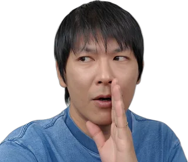

アベジョのAI仕事術
怪しい案件チェッカー
奥さん、
騙されてるかもしれませんよ

応募する前に、その案件の怪しさを目安で確かめます。
貼った文章は、このページの中だけで判定します。どこにも送られません。
結果は目安で、怪しい案件だと断定するものではありません。
怪しさ（目安）
0%
要注意
総評
もっと詳しく知りたいときは、下のボタンで文章をコピーして、ChatGPTなどのAIに貼ってください。チェックの結果と、貼った本文が入っています。
このチェッカーで、完全に見抜くことはできません
あくまで目安にしてください。
募集文には書かれていなくても、応募したあとのやり取りで、結婚しているかを聞いてくるケースがあります。ふつうに仕事をして、評価までもらったあとで、スクールに勧誘されるケースもあります。
かなり巧妙な手口もあるので、募集文だけで完全に判断するのは難しいです。募集文だけでは100%見抜けないことをご理解のうえ、応募するかどうかは、ご自身で判断してください。